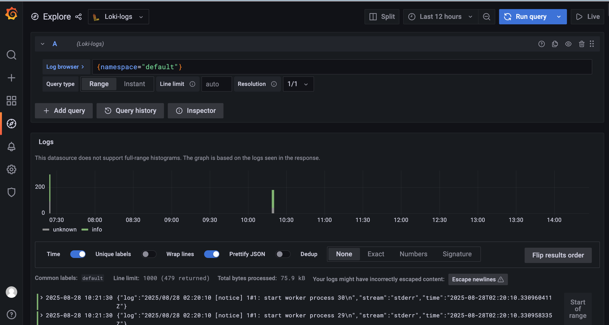

云原生里的日志收集与分析系统 Loki
讲解了K8S集群中日志收集与分析系统Loki的原理和部署方法。
分布式日志管理系统
- Agent：收集各个节点中所有运行服务的日志
- Storage：存储日志，并构建索引和查找数据结构
- GUI：用于便捷查询和展示日志内容
常用的框架ELK和EFK：Logstash（Fluentd）+ Elastic Serach + Kibana
K8S中的方案（云原生）：Promtail + Loki + Grafana

存储方式
- Loki：使用类似散列表的内存数据结构，仅索引元数据，不进行全文索引
→ 成本更低、查询速度快
- 不对日志进行全文索引，仅索引元数据 + 压缩存储 →
更简单、更省成本
- 使用与 Prometheus 相同的标签机制（LogQL 查询语言）
- 特别适合存储 Kubernetes Pod 日志（会自动收集 Pod
标签等元数据）
- 受 Grafana 原生支持，集成度高
- 不对日志进行全文索引，仅索引元数据 + 压缩存储 →
更简单、更省成本
- ELK / EFK：依赖 Elasticsearch 建立索引 → 功能强大，但存储和查询成本较高
数据收集和处理
- Loki：使用 Promtail，专为 Loki
设计，性能优于
Logstash，尤其适合大规模日志收集场景，支持良好的水平扩展
- EFK：使用
Fluentd，轻量级、可扩展性好
- ELK：使用 Logstash，可处理多种数据源，但资源消耗更大
扩展性
- ELK / EFK：扩展性强，可处理多种数据源
- Loki：扩展性相对较弱，主要针对日志场景优化
可视化工具
- ELK / EFK：使用
Kibana，功能完善，提供丰富的图表、表格和仪表盘
- Loki：使用 Grafana，功能强大，但需要一定的配置和调整
搭建NFS服务器
由于需要收集多台机器的日志，并持久化存储，需要将一台机器作为NFS服务器存储这些信息。
并且为了方便创建出的Pod使用，需要创建PVC来管理读写。
安装NFS
随便选一个集群中的节点
1 | dnf install nfs-utils rpcbind |
- nobody用户代表无用户，就是让这个文件夹可以被所有人访问，包括其他机器上的匿名用户
部署nfs的storageclass
1 | helm repo add nfs-subdir-external-provisioner https://kubernetes-sigs.github.io/nfs-subdir-external-provisioner/ |
- nfs.server是你自己的NFS服务器地址
- nfs.path就是你之前指定的共享目录
安装好后，主要查看是否有以下两个资源：
- NFS Subdir External Provisioner：这个POD部署在Node2上，当你创建 PVC 时，它会自动在 NFS 共享目录里创建一个子目录，然后把这个子目录绑定给 PVC。相当于创建PVC时，不需要你自己手动创建PV了。
- nsf-client：就是实际的StorageClass，在声明PVC时使用，指定该PVC需要怎么关联PV。
测试
1 | kind: PersistentVolumeClaim |
创建好了之后会有一个PVC和PV资源，对应/nfs/{pvc-name}/这个目录。
我们进入pod中在/usr/share/nginx/html下添加一个文件，会同步到/nfs/{pvc-name}/目录里。
- pvc和pv是绑定在一起的：当某个pod需要使用这个存储时，声明pvc进行挂载即可，pod中挂载的目录会同步到pv中，也就是实际的共享目录中。
- pod删除后或异常退出重建后，pvc和pv是不会删除的，里面的数据也不会丢失。新的pod只要还是声明了这个pvc，仍然可以继续使用里面的数据。
部署Loki
1 | helm repo add grafana https://grafana.github.io/helm-charts |
然后修改values.yaml文件
1 | loki: |
部署
1 | helm install loki -n loki -f values.yaml |
- 每个节点上有promtail日志收集服务
- 还有一个grafana的GUI服务
不过grafana的svc默认是ClusterIP，只能内部访问。
我们可以加一个ingress来暴露这个服务，或者直接修改这个svc类型为NodePort
1 | kl edit svc -n loki loki-grafana |
找到type:ClusterIP改成NodePort即可
获取账户密码：
1 | kubectl get secret loki-grafana -n loki -o yaml |
然后利用base64对user和passwd解码就可以
登录后即可在explorer里查看资源日志

如果发现没有日志，看一下集群里的机器时间是否正确。
要同步时钟和你主机一样。
Comments
Comment plugin failed to load
Loading comment plugin